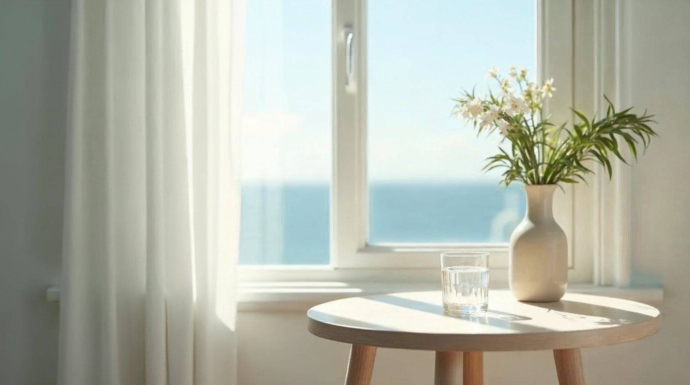
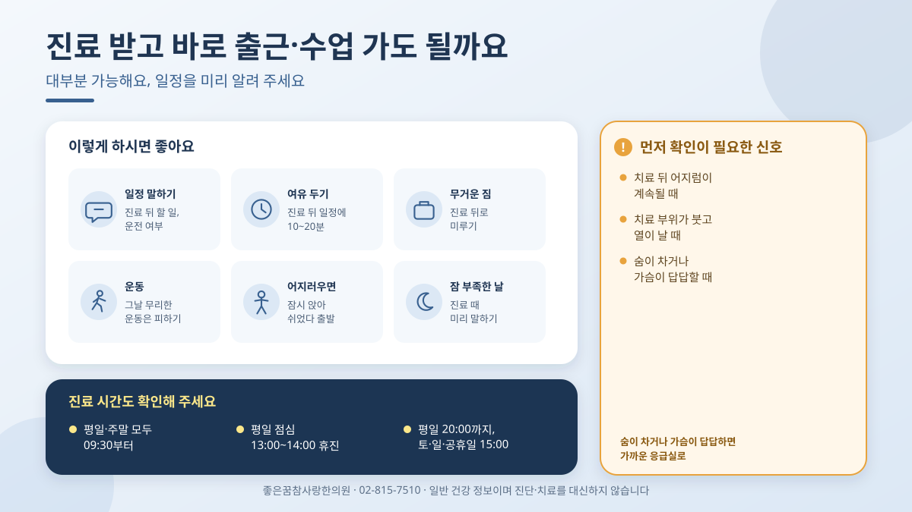

이종호 한의사 감수좋은꿈참사랑한의원 대표원장 (한의사 면허번호 19769)발행 2026-11-25 · 수정 2026-11-26
이 글의 차례
- 왜 일정을 알려 주시면 좋을까요
- 먼저 이렇게 여쭙니다
- 일상에서 먼저 해 볼 수 있는 것
- 한의원에서 함께 살필 수 있는 경우
- 진료 뒤 몸이 나른해지는 건 왜 그럴까요?
- 오늘 시간이 빠듯하다면 무엇부터 할까요?
- 헷갈리기 쉬운 점
- 며칠 지켜보고, 언제 바로 연락할까요
- 상황별로 이렇게 해 보세요
- 스스로 확인해 보는 체크 목록
- 첫 방문 진료는 이렇게 진행됩니다
- 하는 일에 따라 그날 조심할 점이 다릅니다
- 치료 종류별로 미리 알아 두면 좋은 점
- 약침이나 한약을 시작한 날에는 무엇을 챙길까요?
- 진료 뒤 일하다가 불편해지면 그날은 어떻게 할까요?
- 진료 다음 날 아침에는 무엇을 보면 될까요?
- 진료 뒤 바로 식사해도 될까요?
- 매번 같은 시간에 오기 어렵다면요?
- 시험 기간이나 마감 주간처럼 바쁜 때는 어떻게 할까요?
- 다시 오실 때는 이렇게 이어서 봅니다
- 이렇게 기록해 오시면 상담이 쉬워집니다
- 이런 증상은 먼저 확인이 필요합니다
- 함께 읽으면 좋은 글
출근 전이나 점심시간, 수업 사이에 진료를 받고 바로 가야 하는 분이 많습니다. 진료 내용에 따라 그날 조심하면 좋은 동작이 달라서, 미리 일정을 알려 주시면 맞춰 안내해 드리기 쉽습니다.
예를 들어 택배나 요리처럼 손목과 어깨를 계속 쓰는 일을 하시는 분이 어깨 치료를 받고 바로 일하러 가셔야 한다면, 그날은 치료 강도와 방법을 그에 맞춰 정하는 편이 좋습니다. 사무직이라도 진료 직후 긴 회의로 오래 앉아 있어야 한다면 중간에 일어날 시간을 미리 계획해 두시면 도움이 됩니다.
왜 일정을 알려 주시면 좋을까요
- 치료 부위를 그날 바로 많이 쓰면 다시 부담이 갈 수 있습니다.
- 운전이 많은 일은 치료 직후 컨디션을 확인하는 것이 좋습니다.
- 오래 서 있거나 무거운 것을 드는 일은 조절이 필요할 수 있습니다.
- 시간이 촉박하면 상담을 충분히 하기 어렵습니다.
- 교대 근무처럼 잠이 부족한 날은 치료 뒤 더 피곤하게 느낄 수 있습니다.
먼저 이렇게 여쭙니다
- 진료 뒤 바로 어떤 일을 하시나요?
- 운전을 하시나요?
- 오래 서 있거나 무거운 것을 드시나요?
- 오늘 남은 시간은 얼마나 되나요?
일상에서 먼저 해 볼 수 있는 것
- 진료 뒤 일정에 10~20분 여유 두기
- 무거운 짐은 진료 뒤로 미루기
- 그날 무리한 운동은 피하기
- 치료 직후 어지러우면 잠시 앉아 쉬기
- 잠이 부족한 날은 진료 때 미리 말씀하기
한의원에서 함께 살필 수 있는 경우
- 직업상 같은 동작을 반복하는 경우 일하는 자세를 함께 살핍니다.
- 시간이 짧은 날은 가장 불편한 곳부터 먼저 살핍니다.
- 다음 방문을 일정에 맞춰 함께 정합니다.
좋은꿈참사랑한의원에서는 모든 분께 맥을 짚으며 오늘 일정도 함께 여쭙고, 필요한 진찰을 더한 뒤 상태와 일정에 맞춰 치료를 정합니다. 귀가 전에는 그날 피할 동작과 다음에 확인할 일을 알려 드립니다.
진료 뒤 몸이 나른해지는 건 왜 그럴까요?
진료를 받고 나서 졸리거나 몸이 나른하다는 분이 꽤 계세요. 원래 그래요. 하루 종일 긴장하고 있던 몸이 치료받는 동안 잠깐 힘을 빼게 되니까, 그 틈에 쌓여 있던 피로가 올라오는 경우가 많거든요.
그러니까 사실은 나른함 자체가 나쁜 신호라기보다, 그동안 몸이 얼마나 버티고 있었는지 보여 주는 경우가 많아요. 다만 그 상태로 바로 운전하거나 무거운 일을 하면 부담이 될 수 있어서, 잠깐 앉아 물 한 잔 드시고 출발하시라고 말씀드려요.
끼니를 거르고 오셨거나 전날 잠을 못 주무셨다면 나른함이 더 크게 느껴질 수 있어요. 그런 날은 접수할 때 한마디만 해 주세요. 치료 강도를 그날 몸에 맞춰 조절할게요.
오늘 시간이 빠듯하다면 무엇부터 할까요?
바쁜 분들께 '시간 넉넉히 내서 오세요'라고만 하면 오실 수가 없잖아요. 그래서 저는 시간이 짧은 날에는 둘로 나눠요. 오늘 꼭 살펴야 할 것과 다음에 이어서 봐도 되는 것이요.
- 오늘 꼭: 가장 불편한 한 곳, 오늘 일하면서 많이 써야 하는 부위
- 다음에: 오래된 다른 불편, 생활 습관 이야기, 자세한 상담이 필요한 한약 이야기
이렇게 나눠 두면 짧게 들러도 헛걸음이 되지 않아요. 대신 다음 방문 때는 지난번에 미뤄 둔 이야기부터 꺼낼게요.
헷갈리기 쉬운 점
진료 뒤 일할 수 있다는 것과 평소처럼 무리해도 된다는 것은 다릅니다. 치료 부위를 그날만큼은 조금 아껴 쓰는 것이 다음 날 몸 상태를 살피는 데 도움이 됩니다.
며칠 지켜보고, 언제 바로 연락할까요
- 치료 부위가 하루 정도 뻐근하거나 묵직한 느낌은 지켜볼 수 있는 경우가 많습니다. 다음 진료 때 언제부터 언제까지 그랬는지 말씀해 주세요.
- 뻐근함이 2~3일이 지나도 줄지 않거나 오히려 점점 심해진다면 다음 예약을 기다리지 말고 02-815-7510으로 먼저 알려 주세요.
- 치료 직후 어지럽거나 속이 메스꺼우면 바로 출발하지 말고 진료실에 말씀하신 뒤 잠시 앉아 쉬었다 가세요.
상황별로 이렇게 해 보세요
예를 들어 출근 전 아침 9시 30분에 진료를 받고 10시 반까지 사무실에 가야 하는 직장인이라면, 접수할 때 몇 시에는 나가야 하는지 먼저 말씀해 주세요. 시간이 짧은 날은 가장 불편한 곳부터 살피고, 나머지는 다음 방문에서 이어서 봅니다.
예를 들어 수업 사이에 들른 학생이 진료 뒤 바로 체육 수업이나 운동부 훈련이 있는 경우라면, 그날은 치료한 부위를 크게 쓰는 동작을 줄이는 쪽으로 계획을 세웁니다. 훈련 일정표를 보여 주시면 다음 진료 날짜를 정하기도 쉽습니다.
예를 들어 진료 뒤 바로 장거리 운전을 해야 하는 경우라면, 출발 전에 몸 상태를 한 번 더 확인하고 잠시 쉬었다 출발하시기를 권합니다. 운전 중 졸리거나 어지러우면 안전한 곳에 차를 세우고 쉬세요.
스스로 확인해 보는 체크 목록
- 진료 뒤 바로 해야 하는 일이 무엇인지 접수 때 말씀드렸나요?
- 진료가 끝난 뒤 다음 일정까지 10~20분 여유가 있나요?
- 오늘 무거운 짐을 들거나 오래 서 있어야 하나요?
- 진료 뒤 운전을 해야 하나요?
- 전날 잠을 충분히 잤나요?
- 끼니를 거르고 오지는 않았나요?
- 오늘 치료받은 부위를 그날 많이 쓰게 되는 일정이 있나요?
첫 방문 진료는 이렇게 진행됩니다
처음 오시면 접수 때 기본 정보를 적고, 복용 중인 약이나 다른 병원 검사 결과가 있으면 함께 보여 주세요. 진료실에서는 모든 분께 맥을 짚으며 불편한 곳과 경위, 하시는 일과 오늘 남은 일정을 여쭙고, 신체 진찰을 더합니다. 필요하다고 판단될 때는 초음파로 근육과 힘줄을 확인하기도 합니다.
그다음 오늘 받을 치료와 이유를 먼저 설명해 드리고 치료를 진행합니다. 초진은 진찰 시간이 있어 재진보다 오래 걸릴 수 있으니, 첫날은 일정을 조금 더 넉넉히 잡아 주세요. 치료가 끝난 뒤에는 상태를 한 번 더 확인하고, 다음 방문 날짜를 일정에 맞춰 함께 정해 드립니다.
하는 일에 따라 그날 조심할 점이 다릅니다
- 사무직: 진료 뒤 회의나 컴퓨터 작업으로 오래 앉아 있게 된다면 50분에 한 번은 일어나 어깨와 허리를 가볍게 움직여 주세요. 치료한 부위를 의자 등받이나 책상 모서리에 오래 기대 누르는 자세는 피하는 편이 좋습니다.
- 서서 일하거나 물건을 나르는 일: 무거운 상자는 그날만큼은 동료와 나눠 들거나 수레를 쓰고, 허리를 숙여 드는 대신 무릎을 굽혀 몸 가까이 붙여 듭니다.
- 운전이 많은 일: 출발 전에 의자 높이와 등받이 각도를 맞추고, 한 시간 넘게 운전한다면 중간에 차에서 내려 몸을 풀어 주세요.
- 학생: 진료 뒤 바로 체육이나 운동부 활동이 있다면 미리 말씀해 주세요. 그날 피할 동작을 구체적으로 정해 드립니다.
치료 종류별로 미리 알아 두면 좋은 점
- 침 치료를 받은 날에는 침 맞은 자리를 세게 문지르거나 긁지 않는 것이 좋고, 샤워나 운동은 진료 때 안내받은 대로 시간을 두고 합니다.
- 체외충격파를 받은 날에는 치료한 부위가 잠시 뻐근하거나 붉어질 수 있어, 그 부위로 무거운 것을 들거나 오래 버티는 동작은 줄이는 편이 좋습니다.
- 추나를 받은 날에는 몸이 나른하거나 가볍게 몸살 기운을 느끼는 분도 있어, 저녁 일정은 무리하지 않게 잡아 주세요.
- 어떤 치료를 받을지는 그날 상태를 보고 정하므로, 진료 뒤 일정은 접수 때 먼저 알려 주시면 그에 맞춰 설명해 드립니다.
약침이나 한약을 시작한 날에는 무엇을 챙길까요?
- 약침을 맞은 날: 맞은 자리를 세게 문지르거나 누르지 말고, 그 부위로 무거운 것을 오래 버티는 동작은 줄여 주세요.
- 한약을 처음 받은 날: 출근길이나 학교에서 언제 드실지 미리 정해 두면 빼먹지 않기 쉬워요. 복용법은 받으실 때 안내해 드려요.
- 한약을 드시는 동안: 술은 드시지 않아요. 회식이나 모임이 잡혀 있다면 미리 말씀해 주세요.
- 한약을 드신 뒤 속이 불편하거나 피부에 이상이 생기면 복용을 멈추고 연락해 주세요.
- 다른 병원에서 처방받은 약은 처방한 의사와 상의 없이 줄이거나 끊지 않습니다.
진료 뒤 일하다가 불편해지면 그날은 어떻게 할까요?
일하다가 치료받은 부위가 당기거나 묵직해지면, 하던 동작을 잠시 멈추고 자세를 바꿔 보세요. 자리에서 일어나 몇 걸음 걷기만 해도 한결 덜하다는 분이 많아요.
그날 남은 일 가운데 그 부위를 많이 쓰는 일은 동료와 나누거나 다음 날로 미룰 수 있는지 살펴보세요. 어떤 동작에서 불편했는지 한 줄 적어 두시면 다음 진료에서 바로 써요.
진료 다음 날 아침에는 무엇을 보면 될까요?
진료 당일보다 다음 날 아침이 더 많은 걸 알려 줄 때가 있어요. 밤사이 몸이 하루치 일과 치료를 정리하고 난 뒤의 모습이거든요.
- 일어날 때 치료받은 부위가 어제보다 가벼운지, 묵직한지
- 세수하거나 옷을 입을 때 걸리는 동작이 있는지
- 밤에 자다가 깬 횟수가 평소와 달랐는지
- 출근길 계단을 오르거나 손잡이를 잡을 때 느낌이 어땠는지
이 가운데 하나만 골라 적어 오셔도 충분해요. 다음 진료 때 그 한 줄을 보고 치료 방법과 일정을 다시 맞춰요.
진료 뒤 바로 식사해도 될까요?
점심시간 앞뒤로 오시는 분들은 진료 뒤 식사를 서두르시곤 해요. 평소처럼 드셔도 괜찮아요. 다만 급하게 많이 드시면 오후에 더 나른할 수 있으니 천천히 드세요.
끼니를 거르고 진료를 받으면 치료 뒤 기운이 빠지는 느낌이 더할 수 있어요. 바쁜 날이라도 가볍게 무언가 드시고 오시는 편이 좋아요.
진료 직후 커피나 에너지 음료로 기운을 내려는 분도 계신데, 그날은 물이나 따뜻한 차를 먼저 드셔 보세요.
매번 같은 시간에 오기 어렵다면요?
교대 근무를 하시거나 일정이 주마다 바뀌는 분도 많으시죠. 매번 같은 요일, 같은 시간이 아니어도 괜찮아요. 지난 기록을 이어서 보니까요.
근무표나 수업 시간표를 보여 주시면 다음 방문을 거기에 맞춰 함께 정해요. 일정이 바뀌면 바뀐 대로 알려 주시면 되고요. 사정에 맞춰 오시는 게 가장 오래 이어 갈 수 있는 방법이에요.
야간 근무를 마치고 바로 오시는 날이라면 그 사실을 먼저 알려 주세요. 잠을 못 잔 몸에 맞춰 치료 강도를 정해요.
시험 기간이나 마감 주간처럼 바쁜 때는 어떻게 할까요?
바쁜 주간이 다가오면 진료를 아예 쉬어야 하나 고민하시는 분이 많아요. 쉬기 전에 먼저 말씀해 주세요. 짧게 들러 가장 불편한 곳만 살피는 방법도 있고, 바쁜 주간이 끝난 뒤로 다음 방문을 미리 정해 두는 방법도 있어요.
어느 쪽이든 괜찮아요. 같이 정하면 돼요. 다만 바쁜 시기에는 잠이 줄고 끼니가 불규칙해지기 쉬워서, 그 기간에 몸이 어땠는지 짧게라도 적어 두시면 다음 진료에서 큰 도움이 돼요.
일도 학업도 쉽게 줄일 수 있는 게 아니잖아요. 저는 '일을 쉬세요'라고 말씀드리기보다 일하면서도 몸이 버틸 수 있게 돕는 게 제 몫이라고 생각해요. 일정을 알려 주시는 건 그걸 같이 짜기 위한 거예요.
다시 오실 때는 이렇게 이어서 봅니다
다시 오시면 지난 진료 뒤 일하면서 어땠는지, 그날 밤 잠과 다음 날 아침의 느낌이 어땠는지부터 여쭙습니다. 진맥도 다시 짚고, 지난번 불편했던 동작을 함께 확인해 치료 방법과 강도를 조정합니다. 담당 원장이 다른 날에도 이전 기록을 보고 이어서 진료합니다.
진료 뒤 일하면서 불편했던 동작이 있었다면 그 동작을 휴대폰 메모에 한 줄로 적어 두세요. 예를 들어 '오후에 상자 들 때 허리가 당김'처럼 짧게 적어도, 다음 진료에서 일하는 자세와 치료 방법을 함께 조정하는 데 큰 도움이 됩니다.

이렇게 기록해 오시면 상담이 쉬워집니다
- 진료 뒤 일정과 하는 일
- 그날 무리했던 동작
- 다음 날 아침의 느낌
- 다음에 오실 수 있는 시간
- 진료 전날의 수면 시간
이런 증상은 먼저 확인이 필요합니다
- 치료 뒤 숨이 차거나 가슴이 답답한 경우, 쉬어도 어지럼이 가라앉지 않는 경우
- 치료 부위가 붓고 열이 나는 경우
이런 신호가 있으면 한의원보다 가까운 병원이나 응급실을 먼저 찾으세요.
함께 읽으면 좋은 글

여쭙는 것
- 진료 뒤 바로 어떤 일을 하시나요?
- 운전을 하시나요?
- 오래 서 있거나 무거운 것을 드시나요?
생활에서 해 볼 것
- 진료 뒤 일정에 10~20분 여유 두기
- 무거운 짐은 진료 뒤로 미루기
- 그날 무리한 운동은 피하기
한의원에서 함께 살필 것
- 직업상 같은 동작을 반복하는 경우 일하는 자세를 함께 살핍니다.
- 시간이 짧은 날은 가장 불편한 곳부터 먼저 살핍니다.
- 다음 방문을 일정에 맞춰 함께 정합니다.
먼저 확인이 필요한 신호
- 치료 뒤 숨이 차거나 가슴이 답답한 경우, 쉬어도 어지럼이 가라앉지 않는 경우
- 치료 부위가 붓고 열이 나는 경우
한눈에 보는 표
| 구분 | 핵심 |
|---|---|
| 여쭙는 것 | 진료 뒤 바로 어떤 일을 하시나요? 운전을 하시나요? |
| 생활에서 해 볼 것 | 진료 뒤 일정에 10~20분 여유 두기 무거운 짐은 진료 뒤로 미루기 |
| 한의원에서 함께 살필 것 | 직업상 같은 동작을 반복하는 경우 일하는 자세를 함께 살핍니다. 시간이 짧은 날은 가장 불편한 곳부터 먼저 살핍니다. |
| 먼저 확인이 필요한 신호 | 치료 뒤 숨이 차거나 가슴이 답답한 경우, 쉬어도 어지럼이 가라앉지 않는 경우 치료 부위가 붓고 열이 나는 경우 |
자주 묻는 질문
치료 후 운전해도 되나요?
대개 가능하지만 어지럽다면 잠시 쉬었다 출발하세요.
점심시간에 와도 되나요?
평일 점심 13:00~14:00은 진료하지 않으니 앞뒤 시간을 이용해 주세요.
평일 마감은 몇 시인가요?
평일은 20:00, 토·일·공휴일은 15:00입니다.
출근 전 아침에 와도 되나요?
평일과 주말 모두 09:30부터 진료하니 출근 시간과 맞는지 확인해 주세요.
좋은꿈참사랑한의원은 재진 때 지난번 이야기부터 이어서 여쭙니다. 진료시간과 예약은 오시는 길에서 확인하세요.
어디서 상담받을 수 있나요?
좋은꿈참사랑한의원은 서울 동작구 만양로2길 2 신성빌딩 3층·5층(서울 동작구 상도동, 7호선 상도역 3번 출구 근처)에 있습니다. 한의사 3명(이종호 대표원장, 조영기 수석진료원장, 정원영 진료원장)이 진료합니다. 진료시간은 평일 09:30~20:00(점심 13:00~14:00), 토·일·공휴일 09:30~15:00이며, 방문 전 전화로 확인을 권합니다. 예약은 네이버 예약, 카카오톡 상담, 전화 02-815-7510로 받습니다.
이 글은 일반적인 건강 정보이며 개인의 진단이나 치료를 대신하지 않습니다. 증상이 있거나 복용 중인 약이 있다면 진료를 통해 확인하세요. 치료 효과는 개인마다 다를 수 있습니다.
작성 기준: 일반적으로 알려져 있는 건강 정보를 참고해 정리했습니다(대표원장 감수). 증상 기록은 1~2주 동안 하루 1회, 비슷한 시간에 적어 오시면 지난 상태와 비교하기 쉽습니다.